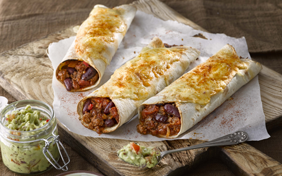

About Me
Connect With Me


Greetings! My name is Jason Peck and I love Mexican food. Specifically this includes just about everything listed HERE.
I wish I could say what my favorite dish is but I love as many Mexican dishes as Kevin likes board games. I have been enjoying eating Mexican cuisine since age 4. Some of my favorite places are Monterrey, Armadillo Grill, Moe's, and Taco Bell. The best Mex I've ever had was at a resutant in El Mercado in San Antonio, TX.